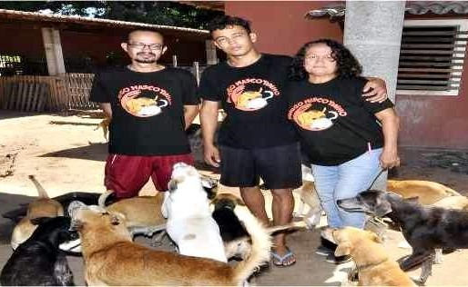

<!DOCTYPE html>
<html lang="pt-br">

<head>
    <meta charset="UTF-8">
    <meta http-equiv="X-UA-Compatible" content="IE=edge">
    <meta name="viewport" content="width=device-width, initial-scale=1.0">


    </body>

</html>

<title>História do abrigo</title>

<link rel="stylesheet" href="./styles.css">
<link rel="preconnect" href="https://fonts.googleapis.com">
<link rel="preconnect" href="https://fonts.gstatic.com" crossorigin>
<link href="https://fonts.googleapis.com/css2?family=Acme&family=Roboto:ital@0;1&display=swap" rel="stylesheet">
</head>

<body>

    <header>
        
    </header>


    <nav>
        <ul class="topico">
            <li>
                <a href="./index.html">
                    <h2>Início</h2>
                </a>
            </li>
            <h2>|</h2>
            <li>
                <a href="./sobre.html">
                    <h2>Sobre nós</h2>
                </a>
            </li>
            <h2>|</h2>
            <li>
                <a href="./doacoes.html">
                    <h2>Doe</h2>
                </a>
            </li>
            <h2>|</h2>
            <li>
                <a href="./contatos.html">
                    <h2>Contato</h2>
                </a>
            </li>
        </ul>

        <main>

            <p>O abrigo surgiu da necessidade que vimos em ajudar animais de rua que estavam em situações muito
                ruins, mesmo sendo pessoas sem recursos, não podíamos ficar de braços cruzados vendo tanto
                sofrimento.
                Eram caixas com gatinhos bebês jogadas em calçadas, cães idosos vagando famintos pelas ruas, animais
                atropelados que ficavam dias agonizando no local do acidente sem ninguém prestar socorro, mesmo sem
                condições fomos acolhendo esses animais que ninguém mais iria ajudar.</p>

            <div class="img-nubia">
                
            </div>

            <p>Aqui eles tinham pelo menos um lugar para serem alimentados e um teto para não dormir ao relento das
                ruas.
                Com o tempo, mesmo só acolhendo casos graves, o número de animais foi aumentando, o abandono de
                animais é algo constante e muitos deles realmente não têm condições de sobreviver nas ruas.
                Não havendo outra forma, tivemos que realmente nos assumir como abrigo, passando a nos dedicar
                totalmente aos animais.
                Criamos perfis em redes sociais e buscamos colaboradores para nos ajudar e conseguir recursos para
                cuidar dos animais acolhidos. </p>
            <p>Mudamos para um lugar maior para dar mais conforto aos animais, mesmo que para isso tendo que
                assumir o compromisso de um aluguel alto que só conseguimos pagar graças às doações de colaboradores
                e mesmo assim com muita dificuldade.
                Está em nossos planos conseguir um local próprio para o abrigo onde estaremos livres do aluguel e
                onde os animais sempre terão um refúgio seguro.
                O trabalho no abrigo é constante. A limpeza dos canis e gatis é feita diariamente. Assim como a
                troca da água, limpeza de utensílios e aplicação de medicação.
                São muitas as tarefas que precisam ser realizadas para a manutenção de todas essas vidas acolhidas.
            </p>

            <div class="video-abrigo">
                <iframe width="90%" height="315" src="https://www.youtube.com/embed/ZAl96PzFjqw"
                    title="YouTube video player" frameborder="0"
                    allow="accelerometer; autoplay; clipboard-write; encrypted-media; gyroscope; picture-in-picture"
                    allowfullscreen></iframe>
            </div>

            <p>O abrigo também tem sempre uma alta demanda por atendimentos veterinários. Como nossa prioridade são
                animais de rua doentes ou feridos temos que prestar a devida assistência a eles.
                São muitos casos graves que precisam de cuidados especiais e de emergência. Cães atropelados, gatos
                cegos, animais com câncer, grávidas que não conseguem parir e muitos outros que morreriam de uma
                forma terrível nas ruas se não recebessem ajuda. </p>
            <p>Nós resgatamos e acolhemos esses animais e buscamos dar uma nova chance a eles. Mas todos esses
                atendimentos e procedimentos têm custos elevados e se tornam um grande empecilho para nós.
                Mas a maior dificuldade de se manter o abrigo é a alimentação. Hoje são mais de 500 animais que
                precisam comer todos os dias.
                Ao todo consumimos duas sacas de ração de cachorro por dia e uma de gato. Fora a alimentação dos
                animais especiais que não comem ração, como leite dos filhotes e misturinhas para idosos e doentes.
                É um custo muito elevado e nem sempre conseguimos alimentar os animais todos os dias. </p>

            <div class="foto-insta">
                
            </div>
            <p>O abrigo não recebe nenhum tipo de ajuda do poder público. Tudo vem através de doações, da venda de
                roupas usadas do nosso bazar e das rifas e sorteios que realizamos.
                Vivemos um dia de cada vez, com muitas dificuldades e trabalhando com poucos recursos. </p>
            <p>Lutamos por todos esses animais, dedicando todo nosso tempo e nossas vidas, contando apenas com a
                ajuda das pessoas da cidade que apoiam a causa animal e mesmo não tendo muito doam o que podem para
                manter o abrigo, assim como doam roupas e objetos usados para nosso bazar.
                É uma corrente pela vida por todos aqueles que não possuem mais ninguém.</p>

        </main>

</body>

</html>